5 Metodología Box-Jenkins y Modelos ARIMA
La metodología Box-Jenkins es un enfoque iterativo para la identificación, estimación y verificación de modelos ARIMA. Estos modelos son capaces de capturar tanto la dependencia de la serie con sus propios valores pasados (componente autorregresivo - AR) como la dependencia con los errores de pronóstico pasados (componente de media móvil - MA). La parte “Integrada” (I) del modelo se refiere a la necesidad de diferenciar la serie para hacerla estacionaria antes de aplicar los componentes AR y MA.
5.1 Identificación del Modelo ARIMA
El primer paso en la metodología Box-Jenkins es identificar el orden tentativo del modelo ARIMA (p, d, q), donde:
p: es el orden del componente autorregresivo (AR).
d: es el número de veces que la serie necesita ser diferenciada para alcanzar la estacionariedad.
q: es el orden del componente de media móvil (MA).
La identificación del orden del modelo se basa principalmente en el análisis de los gráficos de Autocorrelación (ACF) y Autocorrelación Parcial (PACF) de la serie estacionaria o de la serie diferenciada según el caso.
5.2 Gráficos ACF y PACF
Para identificar los posibles órdenes de los componentes Autorregresivo (AR) y de Media Móvil (MA) para nuestro modelo ARIMA, analizamos las funciones de autocorrelación (ACF) y autocorrelación parcial (PACF) de la serie de ventas diarias transformada logarítmicamente (log_ventas_diarias).
El gráfico ACF (hasta lag 21) reveló picos positivos en los lags 7 y 14, aunque estos fueron solo ligeramente superiores al límite de significancia. Esto sugiere una posible correlación de las ventas diarias con los valores de hace una y dos semanas. Sin embargo, el decaimiento en estos lags no fue particularmente pronunciado.
Por otro lado, el gráfico PACF (hasta lag 21) no mostró picos claramente significativos en los lags correspondientes a la frecuencia semanal (7, 14, 21). Los picos en estos lags se mantuvieron dentro de los límites de significancia estadística.
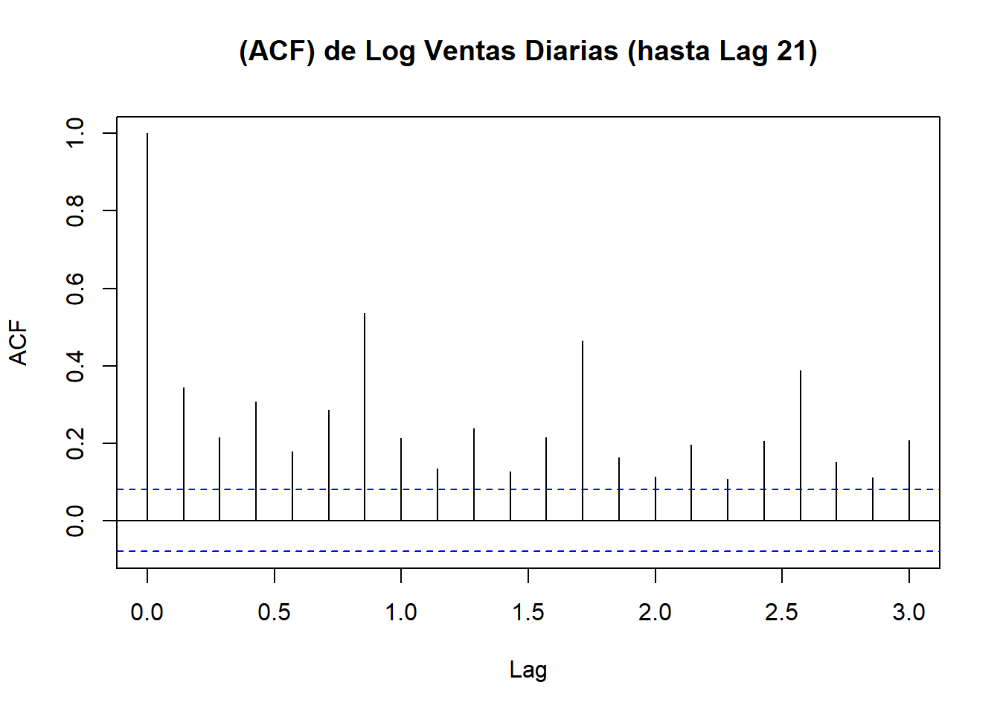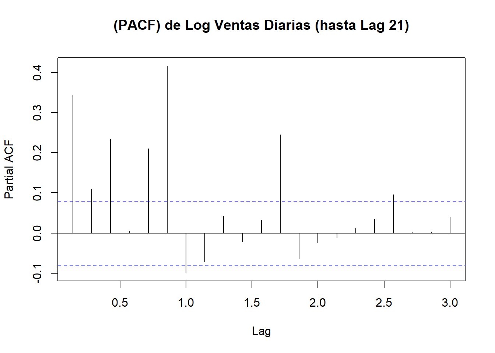
Basándonos en este análisis inicial de los gráficos ACF y PACF y en que la serie estacionaria log_ventas_diarias ya es estacionaria,los modelos ARIMA tentativos que exploraremos son en realidad modelos ARMA:
ARMA(2, 0): Un modelo Autorregresivo de orden 2.
ARMA(0, 2): Un modelo de Media Móvil de orden 2.
ARMA(2, 2): Un modelo mixto con componentes AR de orden 2 y MA de orden 2.
5.3 Estimación del Modelo ARMA
Se estimaron tres modelos ARMA diferentes para la serie estacionaria de ventas diarias transformada logarítmicamente (log_ventas_diarias):
Modelo ARMA(2, 0): Los coeficientes estimados para ar1 (0.3115) y ar2 (0.1149) fueron estadísticamente significativos, dado que sus errores estándar (0.0407 y 0.0408 respectivamente) son relativamente pequeños. El intercepto también fue significativo (10.3061 con un error estándar de 0.0369). El modelo arrojó un valor de AIC de 935.94 y una log-verosimilitud de -463.97.
Modelo ARMA(0, 2): Los coeficientes estimados para ma1 (0.3137) y ma2 (0.0546) parecen ser significativos, aunque el coeficiente ma2 tiene un error estándar (0.0379) relativamente mayor, lo que sugiere una significancia marginal. El intercepto fue significativo (10.3037 con un error estándar de 0.0295). Este modelo tuvo un AIC de 953.62 y una log-verosimilitud de -472.81.
Modelo ARMA(2, 2): Todos los coeficientes estimados (ar1 = 0.5188, ar2 = 0.4585, ma1 = -0.2976, ma2 = -0.5230, intercepto = 10.3827) fueron estadísticamente significativos en relación con sus errores estándar. Este modelo presentó el valor de AIC más bajo de los tres, con 861.37, y la log-verosimilitud más alta, con -424.68.
##
## Call:
## arima(x = log_ventas_diarias, order = c(2, 0, 0))
##
## Coefficients:
## ar1 ar2 intercept
## 0.3115 0.1149 10.3061
## s.e. 0.0407 0.0408 0.0369
##
## sigma^2 estimated as 0.272: log likelihood = -463.97, aic = 935.94##
## Call:
## arima(x = log_ventas_diarias, order = c(0, 0, 2))
##
## Coefficients:
## ma1 ma2 intercept
## 0.3137 0.0546 10.3037
## s.e. 0.0432 0.0379 0.0295
##
## sigma^2 estimated as 0.2801: log likelihood = -472.81, aic = 953.62##
## Call:
## arima(x = log_ventas_diarias, order = c(2, 0, 2))
##
## Coefficients:
## ar1 ar2 ma1 ma2 intercept
## 0.5188 0.4585 -0.2976 -0.5230 10.3827
## s.e. 0.1187 0.1160 0.1075 0.0905 0.1507
##
## sigma^2 estimated as 0.2385: log likelihood = -424.68, aic = 861.37Al comparar los tres modelos ARMA basados en el Criterio de Información de Akaike (AIC), el modelo ARMA(2, 2) parece ofrecer el mejor equilibrio entre el ajuste a los datos y la complejidad del modelo, ya que exhibió el valor de AIC más bajo. La mayor log-verosimilitud para este modelo también respalda un mejor ajuste.
5.3.1 Verificación del Modelo ARMA
La verificación del modelo ajustado implica examinar los residuos del modelo para asegurar que se comportan como ruido blanco (es decir, que son aleatorios, tienen media cero y no están autocorrelacionados).
Gráficos de los Residuos: Visualizar los residuos a lo largo del tiempo para buscar patrones no aleatorios o cambios en la varianza.
Gráfico ACF de los Residuos: El ACF de los residuos no debería mostrar autocorrelaciones significativas en ningún lag. Si las hay, sugiere que el modelo no ha capturado toda la dependencia en la serie.
Prueba de Ljung-Box: Esta es una prueba formal de la hipótesis nula de que las autocorrelaciones de los residuos hasta un cierto lag son todas cero. Un p-valor alto sugiere que no hay autocorrelación significativa.
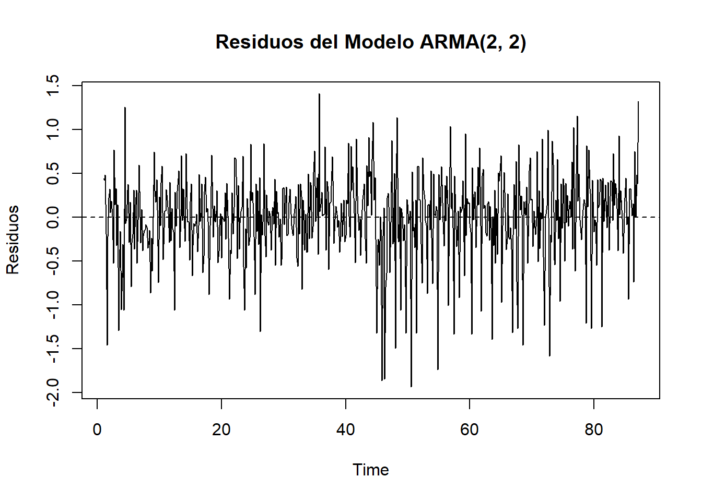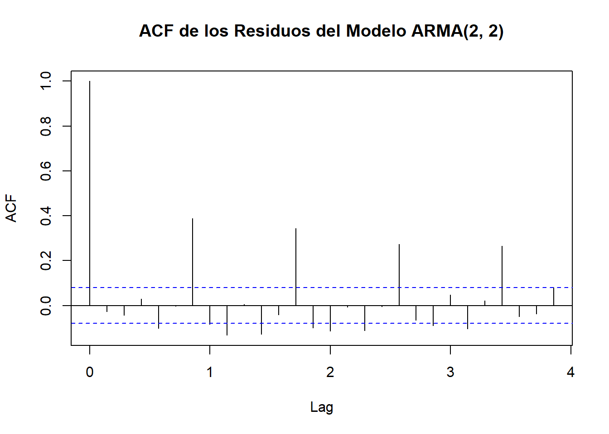
##
## Box-Ljung test
##
## data: residuos_arma_2_2
## X-squared = 276.73, df = 20, p-value < 2.2e-16los residuos parecen mostrar un comportamiento más o menos aleatorio alrededor de cero. No se observan tendencias claras o patrones estacionales evidentes.
La presencia de autocorrelaciones significativas en los residuos del gráfico ACF, especialmente en los lags 1, 2 y posiblemente 3, sugiere que el modelo ARMA(2, 2) no ha capturado completamente la estructura dependiente del tiempo en la serie log_ventas_diarias. Esto indica que los residuos no se comportan como ruido blanco, y por lo tanto, el modelo podría no ser el más adecuado.
Dado que el p-valor de de la Prueba de Ljung-Boxes muy bajo, rechazamos la hipótesis nula de que los residuos hasta el lag 20 son independientes (no autocorrelacionados). Esto confirma formalmente lo que ya habíamos observado en el gráfico ACF de los residuos: existe una autocorrelación significativa en los residuos del modelo ARMA(2, 2).
Dado que el ARMA(2, 2) no pasó la prueba de los residuos, podríamos probar los siguientes:
ARMA(2, 1): AR orden 2, MA orden 1. (Considerando que el PACF corta después del lag 2 y el ACF decae).
ARMA(1, 2): AR orden 1, MA orden 2. (Considerando que el ACF corta después del lag 2 y el PACF decae).
##
## Call:
## arima(x = log_ventas_diarias, order = c(2, 0, 1))
##
## Coefficients:
## ar1 ar2 ma1 intercept
## 1.0632 -0.0775 -0.8879 10.3813
## s.e. 0.0481 0.0454 0.0245 0.1502
##
## sigma^2 estimated as 0.2417: log likelihood = -428.66, aic = 867.32##
## Call:
## arima(x = log_ventas_diarias, order = c(1, 0, 2))
##
## Coefficients:
## ar1 ma1 ma2 intercept
## 0.9849 -0.7875 -0.0926 10.3816
## s.e. 0.0097 0.0474 0.0470 0.1515
##
## sigma^2 estimated as 0.2413: log likelihood = -428.16, aic = 866.32Al comparar los valores de AIC, observamos que:
ARMA(2, 2) tiene el AIC más bajo (861.37).
ARMA(1, 2) tiene un AIC de 866.32.
ARMA(2, 1) tiene un AIC de 867.32. Los valores de log-likelihood también son ligeramente más altos (menos negativos) para el ARMA(2, 2).
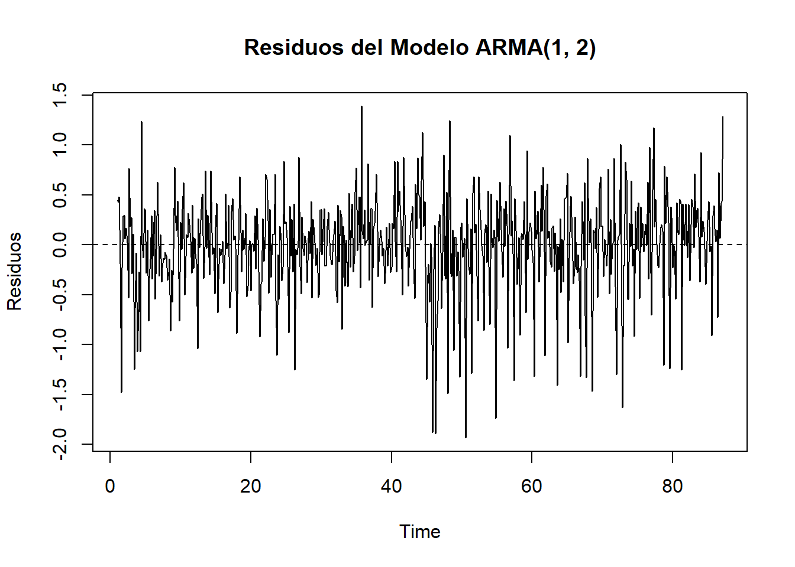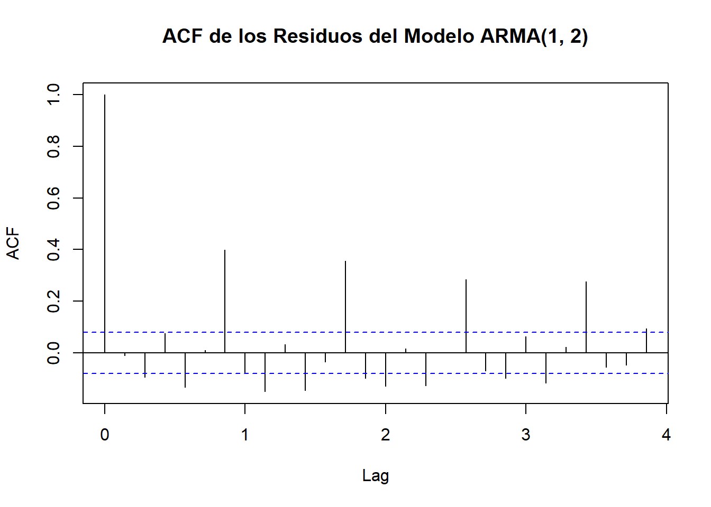
##
## Box-Ljung test
##
## data: residuos_arma_1_2
## X-squared = 313.66, df = 20, p-value < 2.2e-16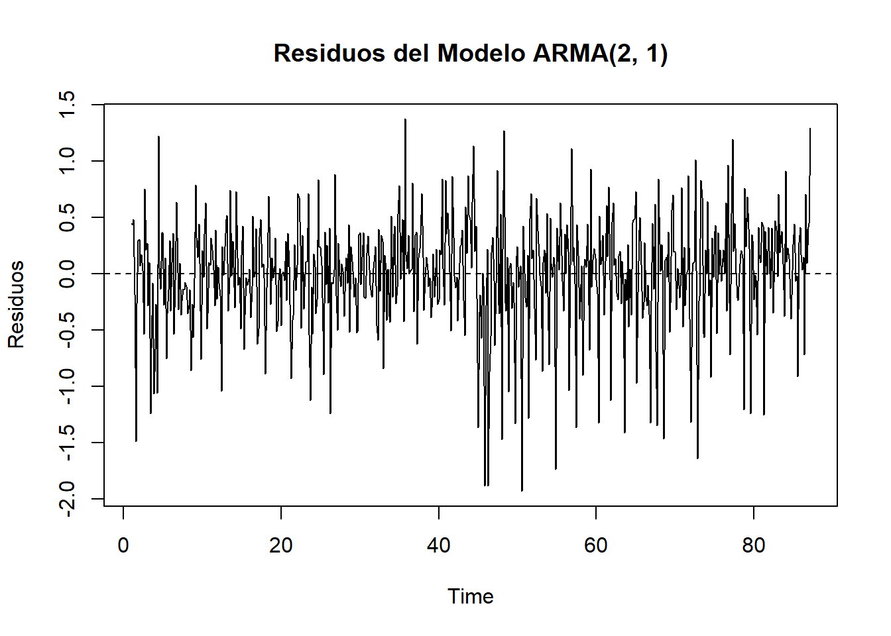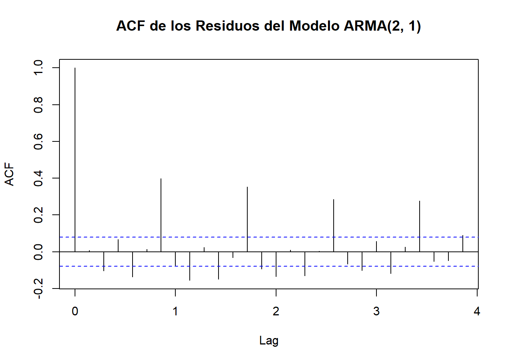
##
## Box-Ljung test
##
## data: residuos_arma_2_1
## X-squared = 315.1, df = 20, p-value < 2.2e-16El modelo ARMA(2, 2) sigue siendo el preferido entre los tres que hemos estimado hasta ahora, aunque los modelos ARMA(1, 2) y ARMA(2, 1) tienen valores de AIC bastante cercanos.
Basándonos en el análisis previo del ACF y PACF, donde vimos cierta significancia hasta el lag 2 o 3, intentamos un ARMA(3, 2)
##
## Call:
## arima(x = log_ventas_diarias, order = c(3, 0, 2))
##
## Coefficients:
## ar1 ar2 ar3 ma1 ma2 intercept
## 0.6037 0.2614 0.1074 -0.4105 -0.3865 10.3770
## s.e. 0.1281 0.1443 0.0493 0.1241 0.1115 0.1418
##
## sigma^2 estimated as 0.2369: log likelihood = -422.57, aic = 859.14##
## Box-Ljung test
##
## data: residuos_arma_3_2
## X-squared = 245.54, df = 20, p-value < 2.2e-16Al igual que con los modelos anteriores, el p-valor es extremadamente bajo (menor que 2.2e-16), lo que es significativamente menor que cualquier nivel de significancia comúnmente utilizado (por ejemplo, 0.05).
Para el modelo ARMA(3, 2), rechazamos nuevamente la hipótesis nula de que los residuos hasta el lag 20 son independientes (no autocorrelacionados). Esto indica que, a pesar de aumentar el orden del modelo, todavía existe una autocorrelación significativa en los residuos.
A continuación, vamos a estimar un modelo SARIMA con un componente estacional simple y un periodo de 7 (para la posible estacionalidad semanal). Utilizaremos los órdenes p=2 y q=2 que nos dieron el mejor AIC en los modelos ARMA. Dado que nuestra serie (log_ventas_diarias) ya es estacionaria (d=0), también usaremos D=0 para el componente estacional.
## Series: log_ventas_diarias
## ARIMA(3,0,2)(0,0,2)[7] with non-zero mean
##
## Coefficients:
## ar1 ar2 ar3 ma1 ma2 sma1 sma2 mean
## 0.6120 0.2804 0.0889 -0.4167 -0.3676 -0.0950 -0.1381 10.3957
## s.e. 0.1738 0.1932 0.0502 0.1715 0.1507 0.0431 0.0439 0.1646
##
## sigma^2 = 0.2341: log likelihood = -415.22
## AIC=848.44 AICc=848.74 BIC=888.07## Series: log_ventas_diarias
## ARIMA(2,0,3)(0,0,2)[7] with non-zero mean
##
## Coefficients:
## ar1 ar2 ma1 ma2 ma3 sma1 sma2 mean
## 1.3191 -0.3309 -1.1267 0.0823 0.1660 -0.1354 -0.1304 10.3786
## s.e. 0.2007 0.1982 0.2005 0.1865 0.0469 0.0471 0.0452 0.1444
##
## sigma^2 = 0.233: log likelihood = -413.72
## AIC=845.43 AICc=845.73 BIC=885.06## Series: log_ventas_diarias
## ARIMA(2,0,2)(1,0,1)[7] with non-zero mean
##
## Coefficients:
## ar1 ar2 ma1 ma2 sar1 sma1 mean
## 0.4894 0.4924 -0.2525 -0.5377 0.3921 -0.5283 10.3983
## s.e. 0.1315 0.1295 0.1198 0.0986 0.1461 0.1333 0.1681
##
## sigma^2 = 0.2368: log likelihood = -419.11
## AIC=854.23 AICc=854.47 BIC=889.45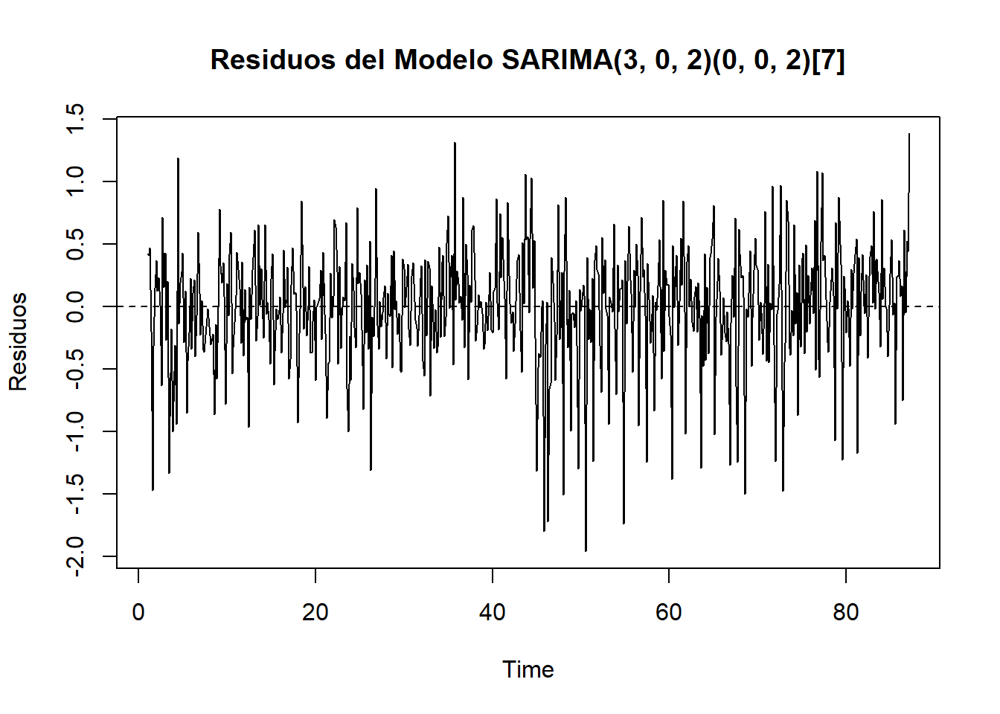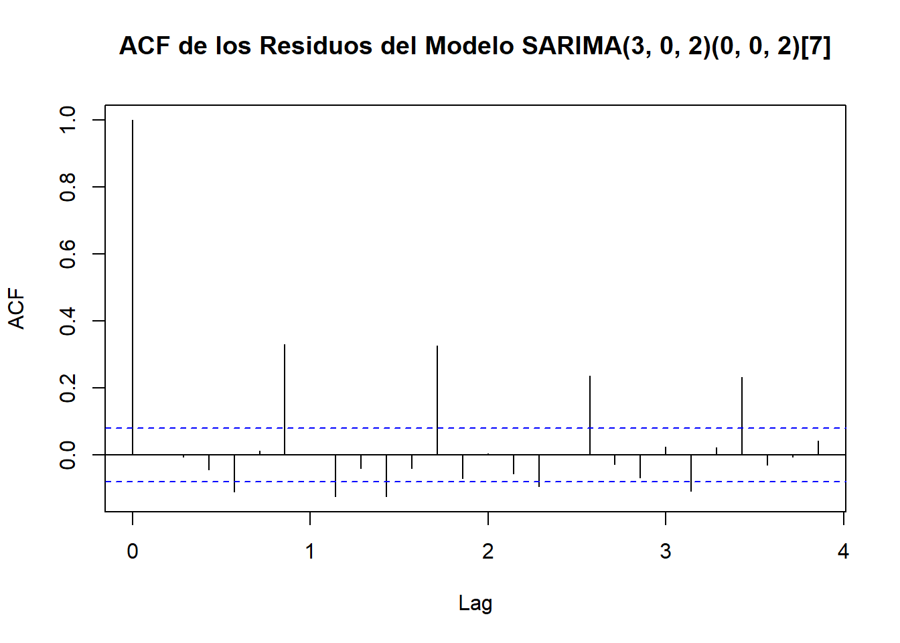
##
## Box-Ljung test
##
## data: residuos_sarima_302_002s7
## X-squared = 211.09, df = 20, p-value < 2.2e-16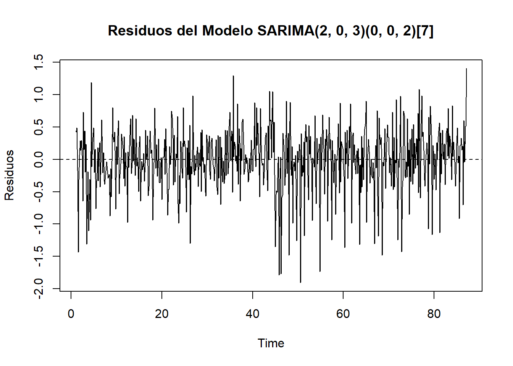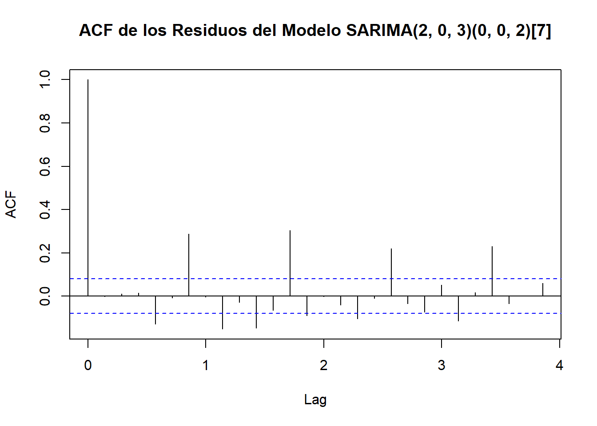
##
## Box-Ljung test
##
## data: residuos_sarima_203_002s7
## X-squared = 195.23, df = 20, p-value < 2.2e-16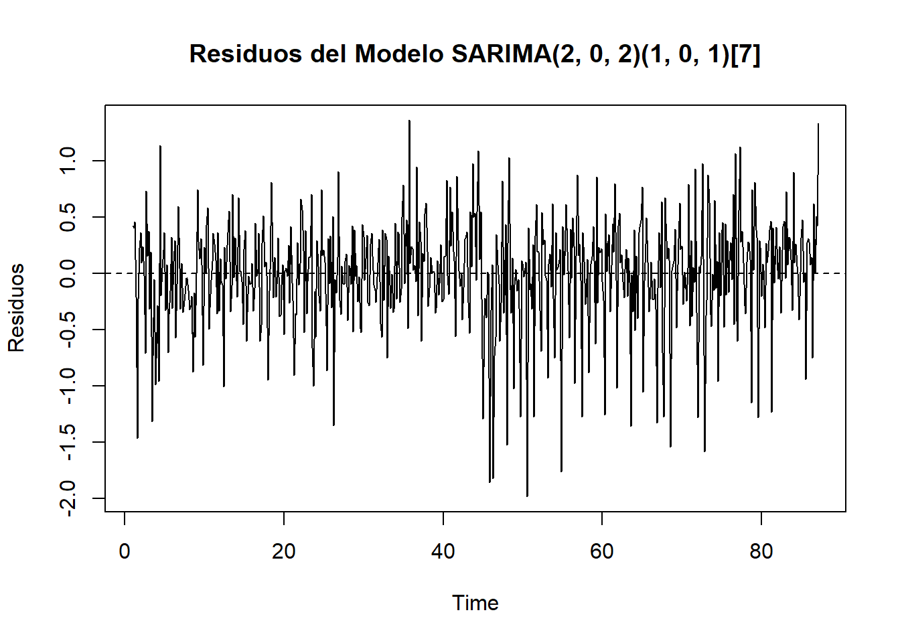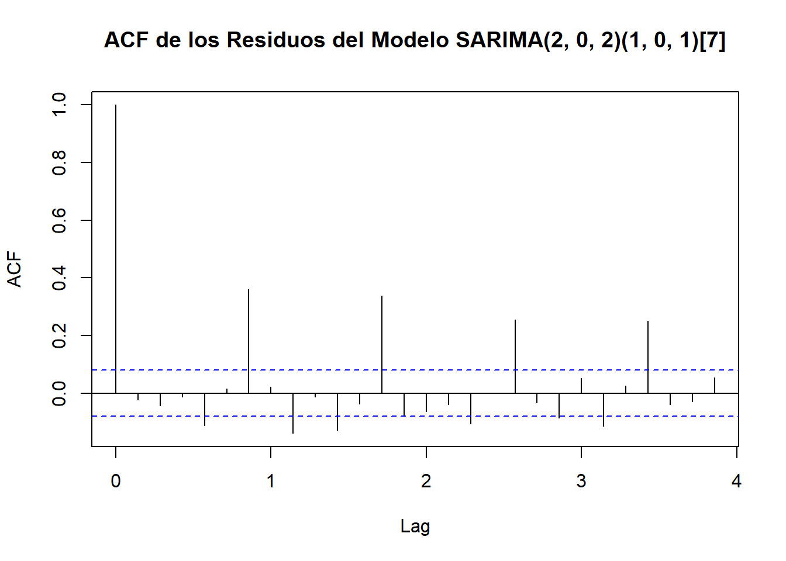
##
## Box-Ljung test
##
## data: residuos_sarima_202_101s7
## X-squared = 243, df = 20, p-value < 2.2e-16Para los tres modelos SARIMA que probamos con órdenes ligeramente diferentes, rechazamos la hipótesis nula de que los residuos hasta el lag 20 son independientes (no autocorrelacionados). Esto indica que, a pesar de ajustar los órdenes de los componentes AR, MA y estacionales, todavía persiste una autocorrelación significativa en los residuos de estos modelos.
Por ultimo, la función auto.arima() puede ser una forma eficiente de explorar una amplia gama de posibles modelos y seleccionar el que mejor se ajuste a los datos según criterios de información como el AIC o BIC.
## Aplicando auto.arima() a la serie de tiempo 'log_ventas_diarias'...##
## ARIMA(2,1,2)(1,0,1)[7] with drift : 853.5256
## ARIMA(0,1,0) with drift : 1171.008
## ARIMA(1,1,0)(1,0,0)[7] with drift : 1059.165
## ARIMA(0,1,1)(0,0,1)[7] with drift : 866.5916
## ARIMA(0,1,0) : 1169.002
## ARIMA(2,1,2)(0,0,1)[7] with drift : 856.7155
## ARIMA(2,1,2)(1,0,0)[7] with drift : 858.24
## ARIMA(2,1,2)(2,0,1)[7] with drift : 851.391
## ARIMA(2,1,2)(2,0,0)[7] with drift : 849.6483
## ARIMA(1,1,2)(2,0,0)[7] with drift : 849.7743
## ARIMA(2,1,1)(2,0,0)[7] with drift : 848.7014
## ARIMA(2,1,1)(1,0,0)[7] with drift : 859.2173
## ARIMA(2,1,1)(2,0,1)[7] with drift : 849.7371
## ARIMA(2,1,1)(1,0,1)[7] with drift : 853.6713
## ARIMA(1,1,1)(2,0,0)[7] with drift : 852.998
## ARIMA(2,1,0)(2,0,0)[7] with drift : 955.9923
## ARIMA(3,1,1)(2,0,0)[7] with drift : 850.528
## ARIMA(1,1,0)(2,0,0)[7] with drift : 1037.373
## ARIMA(3,1,0)(2,0,0)[7] with drift : 947.3315
## ARIMA(3,1,2)(2,0,0)[7] with drift : 851.7058
## ARIMA(2,1,1)(2,0,0)[7] : 846.8599
## ARIMA(2,1,1)(1,0,0)[7] : 857.3269
## ARIMA(2,1,1)(2,0,1)[7] : 847.8734
## ARIMA(2,1,1)(1,0,1)[7] : 851.8313
## ARIMA(1,1,1)(2,0,0)[7] : 851.2021
## ARIMA(2,1,0)(2,0,0)[7] : 953.9674
## ARIMA(3,1,1)(2,0,0)[7] : 848.6748
## ARIMA(2,1,2)(2,0,0)[7] : 847.8073
## ARIMA(1,1,0)(2,0,0)[7] : 1035.352
## ARIMA(1,1,2)(2,0,0)[7] : 847.9652
## ARIMA(3,1,0)(2,0,0)[7] : 945.3024
## ARIMA(3,1,2)(2,0,0)[7] : Inf
##
## Best model: ARIMA(2,1,1)(2,0,0)[7]##
## --- Resumen del Modelo Seleccionado por auto.arima() ---## Series: log_ventas_diarias
## ARIMA(2,1,1)(2,0,0)[7]
##
## Coefficients:
## ar1 ar2 ma1 sar1 sar2
## 0.0589 -0.1163 -0.8532 -0.1155 -0.1489
## s.e. 0.0479 0.0457 0.0262 0.0429 0.0418
##
## sigma^2 = 0.2349: log likelihood = -417.36
## AIC=846.72 AICc=846.86 BIC=873.13## Series: log_ventas_diarias
## ARIMA(2,1,1)(2,0,0)[7]
##
## Coefficients:
## ar1 ar2 ma1 sar1 sar2
## 0.0589 -0.1163 -0.8532 -0.1155 -0.1489
## s.e. 0.0479 0.0457 0.0262 0.0429 0.0418
##
## sigma^2 = 0.2349: log likelihood = -417.36
## AIC=846.72 AICc=846.86 BIC=873.13
##
## Training set error measures:
## ME RMSE MAE MPE MAPE MASE
## Training set 0.005532555 0.4822967 0.3549085 -0.1668849 3.508473 0.6711635
## ACF1
## Training set -0.00123758##
## --- Diagnóstico de Residuos ---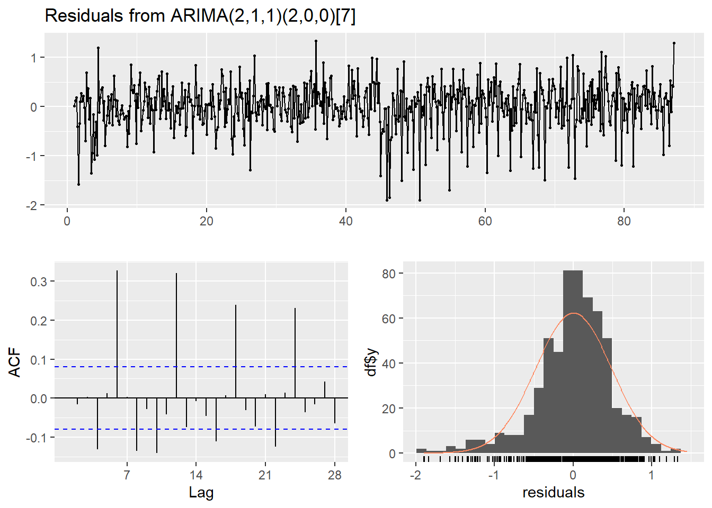
##
## Ljung-Box test
##
## data: Residuals from ARIMA(2,1,1)(2,0,0)[7]
## Q* = 168.95, df = 9, p-value < 2.2e-16
##
## Model df: 5. Total lags used: 14La función auto.arima() ha identificado un modelo SARIMA(2,1,1)(2,0,0)[7] como el que mejor se ajusta a los datos log_ventas_diarias según el criterio AICc. Es importante notar que incluyó una diferenciación de orden 1 (I=1) en la parte no estacional, a diferencia de los modelos que probamos manualmente donde asumimos estacionariedad (d=0). Esto sugiere que, aunque la prueba ADF en la serie logarítmica dio un p-valor significativo, auto.arima() encontró que una diferenciación podría mejorar el modelo.
El resultado de la prueba de Ljung-Box para los residuos de este modelo seleccionado automáticamente es altamente significativo (p-value < 2.2e-16). Esto significa que rechazamos la hipótesis nula de que los residuos son independientes. Por lo tanto, todavía existe una autocorrelación significativa en los residuos del modelo seleccionado por auto.arima().
5.3.2 Pronóstico con el Modelo ARIMA Seleccionado
A pesar de que auto.arima() seleccionó un modelo con un AIC más bajo que muchos de los que probamos manualmente, la persistente autocorrelación significativa en los residuos indica que este modelo aún no es adecuado para pronosticar, ya que no ha capturado toda la información relevante de la serie de tiempo.
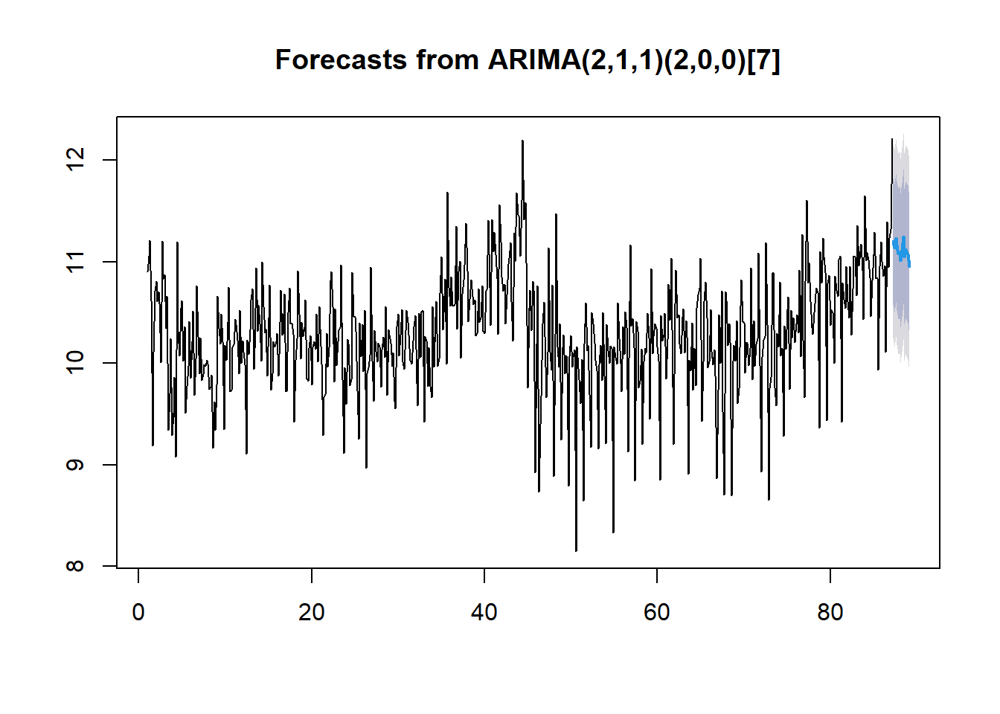
## Point Forecast Lo 80 Hi 80 Lo 95 Hi 95
## 87.28571 11.20393 10.58274 11.82511 10.253911 12.15394
## 87.42857 11.13458 10.50040 11.76876 10.164685 12.10448
## 87.57143 11.23463 10.59990 11.86936 10.263894 12.20537
## 87.71429 11.16065 10.52116 11.80014 10.182638 12.13867
## 87.85714 11.08042 10.43425 11.72659 10.092188 12.06865
## 88.00000 11.09442 10.44234 11.74650 10.097155 12.09169
## 88.14286 11.01379 10.35613 11.67146 10.007983 12.01960
## 88.28571 11.11576 10.45794 11.77357 10.109708 12.12180
## 88.42857 11.25042 10.58872 11.91212 10.238443 12.26240
## 88.57143 11.04783 10.38092 11.71474 10.027886 12.06777
## 88.71429 11.12307 10.45171 11.79443 10.096314 12.14983
## 88.85714 11.08985 10.41426 11.76544 10.056618 12.12308
## 89.00000 11.07491 10.39505 11.75478 10.035148 12.11468
## 89.14286 10.95162 10.26748 11.63576 9.905323 11.99792Aunque podemos observar visualmente el patrón general del pronóstico generado por el modelo ARIMA(2,1,1)(2,0,0)[7], no debemos confiar en su precisión debido a los problemas con los residuos. Este gráfico es más ilustrativo de lo que el modelo intentó predecir, en lugar de una predicción confiable de las ventas futuras.
Se recomienda considerar otros enfoques de modelado de series de tiempo como los modelos de Regresión con Componentes de Serie de Tiempo.